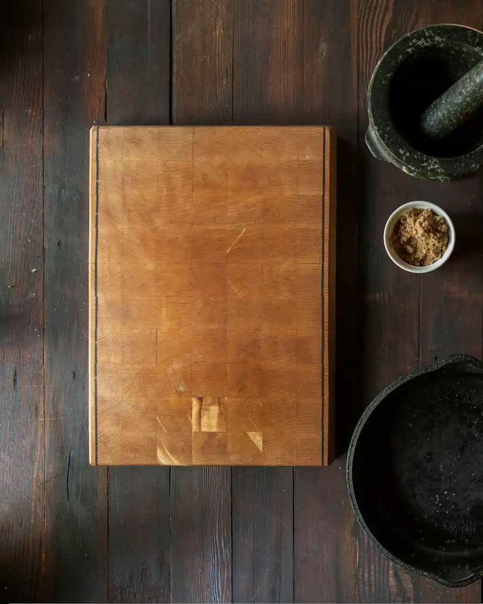
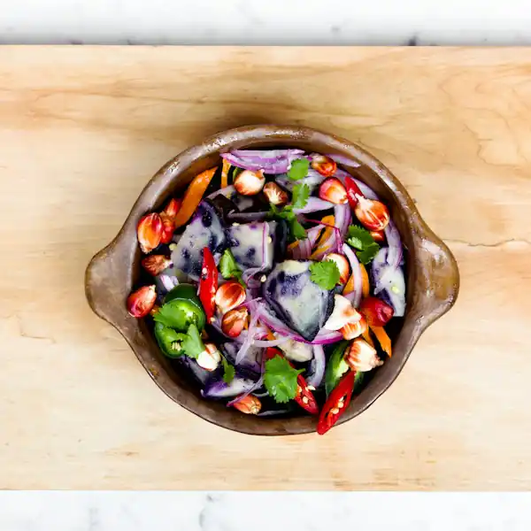
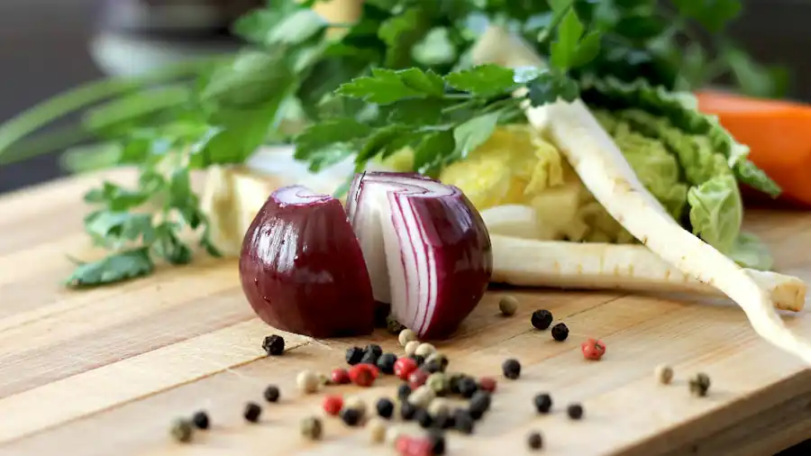
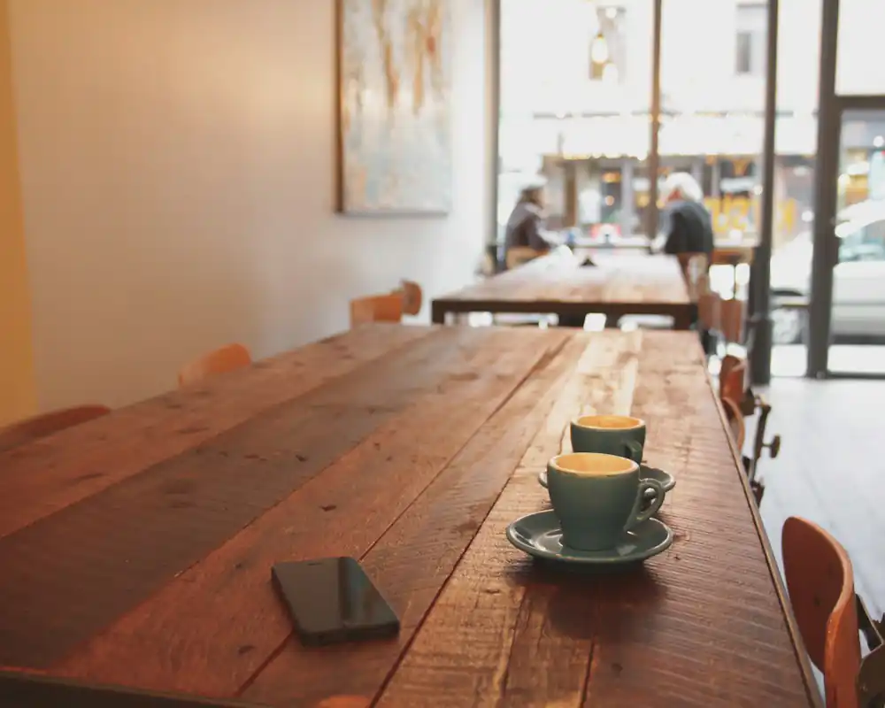

Your tableTL-0000
- Table for
- 2
- Day
- -
- Time
- -
- Name
- -
- Notes
- -
Fins aviat - see you soon!
Cuina catalana · Hamburg-Ottensen · since 2016
Pa amb tomàquet, rice from the paella pan, fish from the grill and a porró of red passed down the table. Thirty-four seats at small tables, fourteen at the long one - and a kitchen that cooks until 21:45.


Tuesday to Sunday
Only 12 portions of the suquet - say so when you book and we keep one back.
From the kitchen
Fish comes from the auction in Cuxhaven on Tuesdays and Fridays, vegetables from two growers in the Vierlande, the rice from the Ebro delta. When something runs out, it comes off the board - so the board is the truest menu we have.

Up to eight guests online, up to 60 days ahead. The form only offers the times the kitchen serves on the day you pick.
Fins aviat - see you soon!
This is a demo - nothing was sent. A real booking would arrive as an email with the same reference.

Private dining
Seven metres of oak that seats fourteen. Book it for a birthday, a team or a family that never fits in one photo - we cook one menu for everybody and bring it in big dishes, the way Sunday lunch goes in Catalonia.
We came for the black rice and stayed for the porró lesson. My father has not stopped talking about it.
I can't eat gluten and nobody made a face. Jordi came out and told me which three dishes he would change for me.
The menu del migdia is the best €23 in Ottensen. Back at my desk by 13:15, which is the whole point.
Tuesday to Sunday